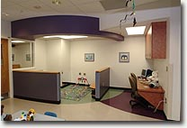
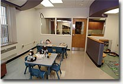
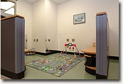

Hematology/Oncology: Center for Childhood Cancer and Blood Disorders
 Welcome
Welcome
The
Center for Childhood Cancer and Blood Disorders is the Capital Region's
only provider of care to children and adolescents with cancer and with
a wide variety of disorders of the blood.
The Albany Med Advantage
The multi-disciplinary
team for this program includes 5 pediatric hematologists/oncologists,
highly trained chemotherapy nurses, a pediatric social worker, child
life specialist, and the support of all of Albany Medical Center's
pediatric subspecialists. More than 700 children are seen on a yearly
basis in this area for a wide range of cancers and blood disorders in
children, including:
- Leukemia
- Lymphomas
- Brain tumors
- Wilm's tumor
- Neuroblastoma
- Anemia's and bleeding disorders (including hemophilia and platelet disorders) and disorders of the white blood cells
The Center is a member of the Children's Oncology Group (COG), and treatment is provided in accordance with its protocols and guidelines. This allows us to provide the most effective and up-to-date therapy available.
Outpatient visits are in our Center for Childhood Cancer and Blood
Disorders on the fifth floor of the hospital. Most treatments are
provided in a playroom setting with separate areas for infants, older
children and adolescents. If it were not for the IV poles and many
children who have lost their hair, it would be easily mistaken for a
very happy day care center.
For more information please contact us:
Phone: 518-262-5513
Office Hours
8:30am - 4:30pm